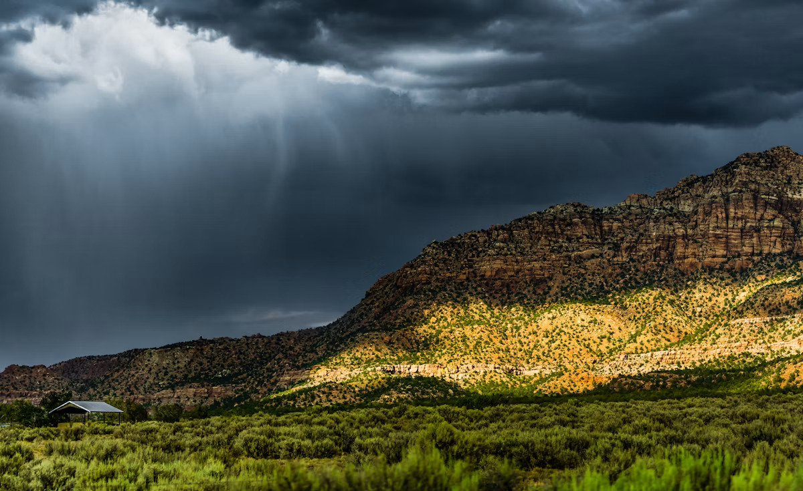

"Peace cannot be kept by force, it can only be achieved by understanding." — Albert Einstein
Effects of war
Schools turn to rubble. Hospitals close. Generations grow up without safety, education or hope.
The refugee crisis
Families flee with only what they can carry, crossing borders into camps and uncertainty — often separated from loved ones.
Impact on education & health
Millions of children lose years of schooling, while destroyed clinics and trauma leave lasting scars on physical and mental health.
- Day 1 Bombing forces families to flee with what they can carry.
- Week 1 Borders, camps, separation from loved ones.
- Year 1 Trauma, lost schooling, broken healthcare.
- A decade Rebuilding takes generations — if peace holds.
How does peace actually begin?
Diplomacy, humanitarian aid, refugee resettlement, education, and youth peace-building programs.
